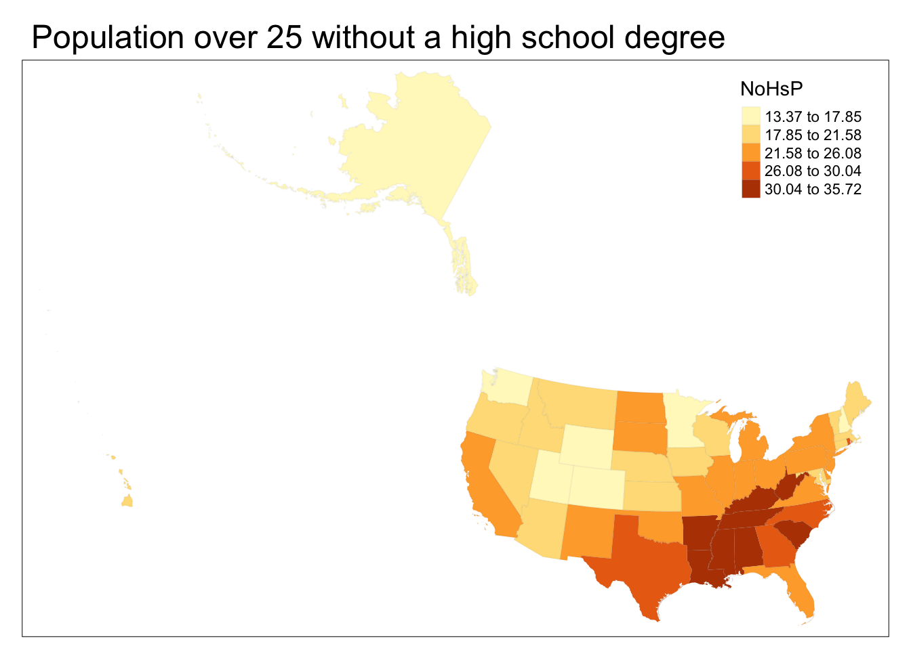

Chapter 3 Basic Usage
oepsData is centered around two functions: load_oeps_dictionary, which loads a basic data dictionary; and load_oeps, which directly loads OEPS data. We expect that most users will start by calling load_oeps_dictionary to look at what data is available at their desired analysis scale, followed by calling load_oeps to actually load the data.
load_oeps_dictionary itself takes one argument – scale – that can be any of “tract”, “zcta”, “county”, or “state”. It returns the data dictionary (stored as a data.frame), so we recommend browsing it through the View command:
# See what data is available at the state level
data_dictionary <- load_oeps_dictionary(scale="state")
# if working in RStudio, we recommend:
# View(data_dictionary)
# as we're in a bookdown, we just preview it simply:
head(data_dictionary)
#> Theme 1980 1990 2000 2010 Latest Longitudinal Variable
#> 201 Geography x x x x x x HEROP_ID
#> 202 Geography x x x x x x G_STATEFP
#> 203 Geography x x x x x x GEOID
#> 204 Geography x x x x x x STUSPS
#> 205 Social x x x x x x TotPop
#> 206 Social <NA> <NA> <NA> <NA> x <NA> TotPopHh
#> Description
#> 201 A derived unique id corresponding to the relevant geographic unit.
#> 202 Two digit federal information processing standard code with a G appended to the front.
#> 203 Two digit federal information processing standard code.
#> 204 State postal abbreviation
#> 205 Estimated total population
#> 206 Total number of people in households
#> Metadata Location
#> 201 <NA>
#> 202 <NA>
#> 203 <NA>
#> 204 <NA>
#> 205 https://github.com/GeoDaCenter/opioid-policy-scan/blob/main/data_final/metadata/Age_2018.md
#> 206 https://github.com/GeoDaCenter/opioid-policy-scan/blob/main/data_final/metadata/HouseholdType.md
#> Source
#> 201 Healthy Regions & Policies Lab, UIUC
#> 202 Tiger/Line 2018
#> 203 Tiger/Line 2018
#> 204 Tiger/Line 2018
#> 205 ACS 2018, 5-Year; 2010 Decennial Census; IPUMS NHGIS
#> 206 ACS 2018, 5-Year
#> Source Long
#> 201 <NA>
#> 202 Tiger/Line 2018 Shapefiles
#> 203 Tiger/Line 2018 Shapefiles
#> 204 Tiger/Line 2018 Shapefiles
#> 205 American Community Survey 2014-2018 5 Year Estimates; 2010 Decennial Census; Integrated Public Use Microdata Service National Historic Geographic Information Systems
#> 206 American Community Survey 2014-2018 5 Year Estimates
#> OEPSv1 Type Example Data Limitations
#> 201 <NA> String 040US01-2018 <NA>
#> 202 <NA> String G53 <NA>
#> 203 <NA> String 53 <NA>
#> 204 <NA> String WA <NA>
#> 205 DS01 Integer 7294336 <NA>
#> 206 DS05 Integer 7151776 <NA>
#> Comments
#> 201 The HEROP_ID is generated as follows: Summary Level Code + "US" + GEOID + “-” + Year. In the case of State geographies, Summary Level Code is 040 and GEOID is State FP .
#> 202 <NA>
#> 203 <NA>
#> 204 <NA>
#> 205 1980, 1990, and 2000 data from respective decennial censuses downloaded from IPUMS NHGIS and aggregated upwards.
#> 206 <NA>
#> Analysis
#> 201 <NA>
#> 202 <NA>
#> 203 <NA>
#> 204 <NA>
#> 205 <NA>
#> 206 <NA>We might find that we’re interested in the 1990 state data. We can load that data and its geometries using load_oeps.
states_1990 <- load_oeps(scale="state",
year=1990,
geometry=TRUE)
head(data.frame(states_1990))
#> HEROP_ID GEOID TotPop TotUnits Age18_64 Age0_4 Age5_14 Age15_19 Age20_24
#> 1 040US01 1 4040587 1670379 2458810 283295 593000 320426 305402
#> 2 040US02 2 550043 232459 355331 54896 94915 37150 41228
#> 3 040US04 4 3665228 1659430 2205335 292859 540097 260922 279921
#> 4 040US05 5 2350725 1000667 1379536 164667 351148 179622 162750
#> 5 040US06 6 29746266 11182882 18865070 2396639 4199308 2052161 2509677
#> 6 040US08 8 3294394 1477348 2103684 252892 480486 224962 238451
#> Age15_44 Age45_49 Age50_54 Age55_59 Age60_64 AgeOv65 Age15_24P Und45P Ovr65P
#> 1 1857895 224862 194559 183677 180310 522989 15.49 67.67 12.94
#> 2 294441 32117 21812 16595 12897 22368 14.25 80.77 4.07
#> 3 1704450 192571 156945 146658 152874 478774 14.76 69.23 13.06
#> 4 1028120 132085 111252 105811 107584 350058 14.56 65.68 14.89
#> 5 14882822 1619757 1281437 1133380 1098810 3134112 15.34 72.21 10.54
#> 6 1643348 190203 146468 130194 121361 329442 14.07 72.14 10.00
#> WhiteP BlackP HispP AmIndP AsianP PacIsP OtherP NoHsP ChildrenP PovP UnempP
#> 1 73.65 25.26 0.61 0.41 0.52 0.02 0.14 33.14 26.20 18.34 6.88
#> 2 75.54 4.08 3.24 15.58 3.24 0.35 1.21 13.37 31.33 9.00 8.78
#> 3 80.84 3.02 18.78 5.55 1.41 0.09 9.08 21.34 26.77 15.75 7.17
#> 4 82.73 15.91 0.85 0.54 0.52 0.02 0.29 33.65 26.42 19.07 6.76
#> 5 68.96 7.42 25.83 0.81 9.19 0.37 13.23 23.81 26.04 12.51 6.65
#> 6 88.19 4.04 12.88 0.84 1.73 0.08 5.10 15.57 26.14 11.68 5.74
#> VacantP geometry
#> 1 9.79 MULTIPOLYGON (((-85.00237 3...
#> 2 18.81 MULTIPOLYGON (((-164.9762 5...
#> 3 17.51 MULTIPOLYGON (((-109.0452 3...
#> 4 10.94 MULTIPOLYGON (((-94.55929 3...
#> 5 7.17 MULTIPOLYGON (((-122.4463 3...
#> 6 13.19 MULTIPOLYGON (((-102.0422 3...Which lets us operate on the data as we desire. For instance, we can make a simple map:
library(tmap)
#> Breaking News: tmap 3.x is retiring. Please test v4, e.g. with
#> remotes::install_github('r-tmap/tmap')
library(sf)
#> Linking to GEOS 3.11.0, GDAL 3.5.3, PROJ 9.1.0; sf_use_s2() is TRUE
# reproject to a better display CRS
states_1990 <- st_transform(states_1990, "ESRI:102004")
tm_shape(states_1990) +
tm_fill("NoHsP", style="jenks") +
tm_borders(alpha=0.05) +
tm_layout(main.title = "Population over 25 without a high school degree")
3.1 Cacheing
oepsData pulls its data from online repositories, primarily GitHub. This can lead to issues for users operating on slow internet, for whom load times can be long for larger datasets, or for users who anticipate needing the package when entirely offline.
To help minimize these issues, oepsData caches, or saves a local copy of, data loaded by load_oeps on its first load. Additionally, oepsData offers a few commands can help maintain caches:
* cache_geometries and cache_oeps_tables cache all tables and geometries, overwriting prior ones in the process.
* clear_cache deletes all cached data.
* cache_dir returns the directory of the oepsData cache.
Users who want to avoid using cached data and instead download data fresh every time can set cache=FALSE when calling load_oeps.